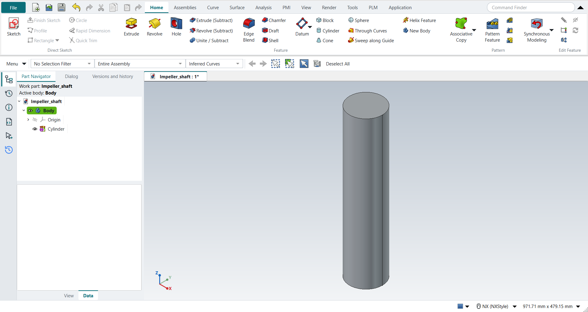
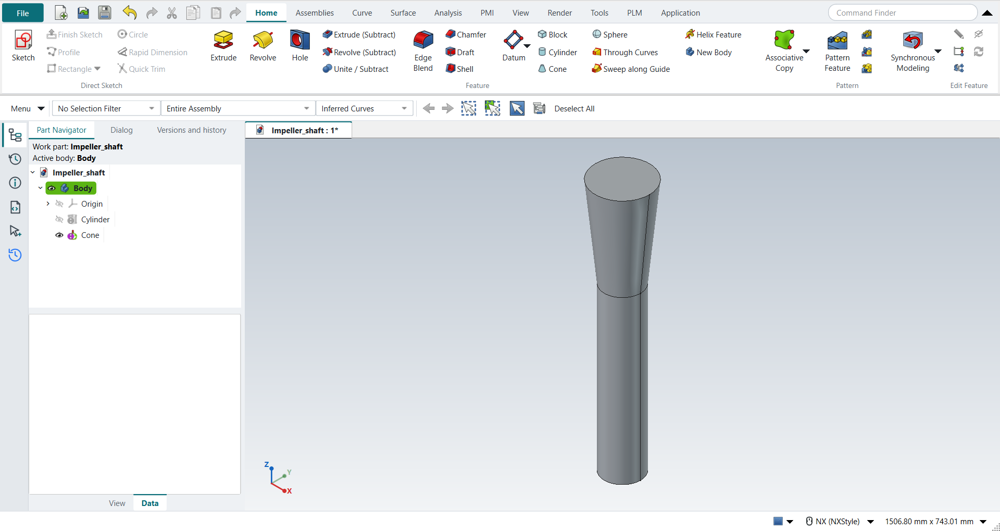

Tutorial AP: Impeller Shaft
| Source |
Ming C. Leu, Wenjin Tao, Amir Ghazanfari and Krishna Kolan, NX 12 for Engineering Design (Missouri University of Science and Technology), section 4.2.2 (Model a Shaft). |
| You learn |
Cylinder (Axis, Diameter, and Height), Cone (Diameters and Height), Specify Vector, the Point Dialog’s Arc/Ellipse/Sphere Center, Boolean Unite, Orient View > Isometric |
| Sizes |
the book’s, in inches, typed in millimetres. A cylinder Ø4 × 18 on ZC from the origin. A cone from Ø4 to Ø6, 10 high, on the cylinder’s top. A cylinder Ø6 × 20 on the cone’s top. |
Step by step
1. The first cylinder
Ctrl+N and save the part as Impeller_shaft.
Click Cylinder (Home › Feature).
Keep the type Axis, Diameter, and Height and choose ZC as the vector.
In Specify Point leave XC, YC and ZC at 0, then type Diameter 4 and Height 18.
Click OK.
Ctrl+F fits the cylinder in the window and End turns the view to Isometric (NX: MB3 > Orient View > Isometric).

2. The cone
Click Cone. Keep Diameters and Height and the ZC vector. In Specify Point choose Arc/Ellipse/Sphere Center and click the cylinder’s top edge: XC, YC and ZC become (0, 0, 18). Type Base Diameter 4, Top Diameter 6 and Height 10, choose Boolean Unite and click OK. The cylinder is the part’s only body, so the dialog selects it for the Unite by itself.

The replay
| # | In the book (NX) | In FreeCAD NX-Style | Result | Notes |
|---|---|---|---|---|
AP1 |
Create a new file (Impeller_shaft) |
Ctrl+N, Model template |
same |
new document ['Unnamed'] |
AP2 |
Units in the New dialog (the book picks inches) |
metric part kept; book sizes typed in mm |
differs |
FreeCAD sets units in Preferences, not in the New dialog; NXStyle defaults to millimetres (document: Standard (mm, kg, s, °); 25.4 mm shows as 25.40 mm) |
AP3 |
Save it as Impeller_shaft |
file name given once by script (the system file dialog is not driven); a change, then the Ctrl+S key |
same |
Impeller_shaft.FCStd rewritten by Ctrl+S: the file holds the change and the part is unmodified afterwards (modified before the key: True); FreeCAD format, not .prt |
AP4 |
Cylinder: Axis, Diameter, and Height; ZC Axis; Point Dialog (0, 0, 0); Diameter 4, Height 18; OK |
ribbon 'Home › Feature', Type 'Axis, Diameter, and Height', Specify Vector 'ZC', XC/YC/ZC 0 typed, Diameter 101.6 and Height 457.2 typed, Boolean 'None', OK |
same |
volume 3706666.6 mm^3, expected 3706666.6; 1 solid(s); origin (0.0, 0.0, 0.0); one undo step ['Cylinder'] |
AP5 |
MB3 > Orient View > Isometric |
Ctrl+F (Fit, to see the cylinder whole), End (NX’s Isometric key) |
same |
view direction (-0.5774, 0.5774, -0.5774) (isometric 1.000000) |
AP6 |
Cone: Diameters and Height; ZC Axis; Point Constructor, Arc/Ellipse/Sphere Center on the cylinder’s top edge; Base Diameter 4, Top Diameter 6, Height 10; Unite with the cylinder; OK |
ribbon 'Home › Feature', Type 'Diameters and Height', Specify Vector 'ZC', 'Arc/Ellipse/Sphere Center', MB1 on the edge at pixel (557, 98): Select Object (1) Arc/Ellipse/Sphere Center: 0, 0, 457.2, Base 101.6, Top 152.4, Height 254 typed, Boolean 'Unite', OK |
same |
volume 6967160.3 mm^3, expected 6967160.3; 1 solid(s); origin (0.0, 0.0, 457.2); one undo step ['Cone']; united with Body |
AP7 |
Cylinder: ZC Axis; Arc/Ellipse/Sphere Center on the cone’s top edge; Diameter 6, Height 20; Unite; OK |
ribbon 'Home › Feature', Type 'Axis, Diameter, and Height', Specify Vector 'ZC', 'Arc/Ellipse/Sphere Center', MB1 on the edge at pixel (557, 96): Select Object (1) Arc/Ellipse/Sphere Center: 0, 0, 711.2, Diameter 152.4 and Height 508 typed, Boolean 'Unite', OK |
same |
volume 16233826.7 mm^3, expected 16233826.7; 1 solid(s); origin (0.0, 0.0, 711.2); one undo step ['Cylinder']; united with Body |
AP8 |
The shaft: cylinder, cone and cylinder in one solid |
compared with the book’s dimensions |
same |
same solid as the reference: 0 mm³ differ, box within 1.4e-14 mm, 5 faces (5 in the reference) |
AP9 |
Save the model |
file name given once by script (the system file dialog is not driven); a change, then the Ctrl+S key |
same |
Impeller_shaft.FCStd rewritten by Ctrl+S: the file holds the change and the part is unmodified afterwards (modified before the key: True); FreeCAD format, not .prt |
| Result | Means |
|---|---|
same |
The book’s NX steps work as written. |
differs |
It works, but the FreeCAD way is different; the notes say how. |
limit |
The book’s way fails in FreeCAD itself; a workaround follows in the next steps. |
missing |
FreeCAD has no such function; a stand-in follows. |
skipped |
Not replayed; the notes give the reason. |
FAILED |
Did not work. |
The finished shaft is compared with the book’s, built from its dimensions: two cylinders and a frustum on one axis.
What differs from NX
-
NX’s Point Dialog opens as its own window. In NX-Style’s Cylinder and Cone dialogs its type and its XC, YC and ZC are fields of the dialog itself.
-
NX lists Cylinder and Cone under More in the Feature group; NX-Style shows them in the group.
-
The Cylinder’s Arc and Height type and the Cone’s other four types are not offered yet; the list’s tooltip names them.